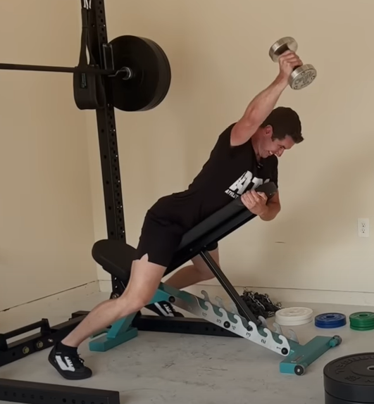
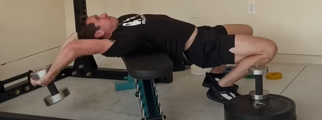
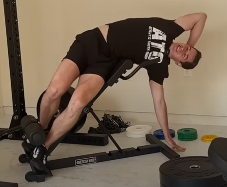

Onderrug oefeningen
- ATG Split Squat. Achterste knie niet de grond laten raken. Kont naar je hiel van je voorste been.
- Seated goodmorning. Voeten voor je knieen. Buikspieren naar de bank. Rechte rug.
- 90/90 stretch of pigeon pose. Met je voorste been op een bank, schuin gezet.
- Dumbbell oefening voor de traps.

- Dumbbell oefening voor de schouders.

- Leg raise. Of andere core oefening voor lage buikspieren.
- Zijwaartse hyperextensions. Kan ook staand met een dumbbell.

- Oefening specifiek voor onderrug. Met kromme rug gewichten optillen. Weinig gewicht